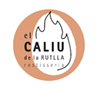

Joaquim
Triola Muñoz
17/08/2003
Formación Académica
- Estoy estudiando Ingeniería informática en la Universidad de Girona.
- Anteriormente cursé el Bachillerato tecnológico en el colegio Bell-lloc del Pla.
Idiomas
- Español: Nivel C1 (sin titulación)
- Catalán: Nivel C
- Inglés: Nivel B2 (First Certificate)
Disponibilidad
Meses de julio y agosto completos. Y, debido a mis estudios, durante el curso escolar solo podría trabajar fines de semana, días festivos, y algunas tardes si la carrera universitaria me lo permiten.
Experiencia Profesional
El año pasado trabajé durante los meses de verano en El Caliu de la Rutlla como: 
- Auxiliar de mostrador de servicio de alimentos
- Ayudante de cocina